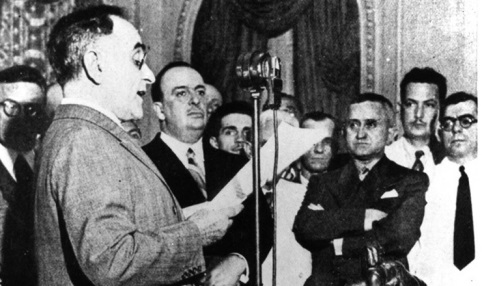

Decreto-lei n.º 1.402, de 5 de julho de 1939 - restaurava a unidade sindical proposta em 1931 e sepultava a pluralidade sindical prevista na Constituição de 1934.
Visando aperfeiçoar os procedimentos de controle sindical, o governo Estado Novista promulga o Decreto-lei n.º 1402/39, que restaurava a unidade sindical proposta em 1931 e sepultava a pluralidade sindical prevista na Constituição de 1934. O artigo 2° estabelecia que somente as associações profissionais registradas no Departamento Nacional do Trabalho ou nas Inspetorias Regionais do Ministério do Trabalho, Indústria e Comércio seriam "reconhecidas como sindicatos". O artigo 6°, por sua vez, consignava que não seria reconhecido "mais de um sindicato para cada profissão". Já o artigo 48 estabelecia que "nenhum ato de defesa profissional será permitido a associação não registrada na forma deste artigo, não podendo ser conhecido qualquer pedido seu, ou representação."